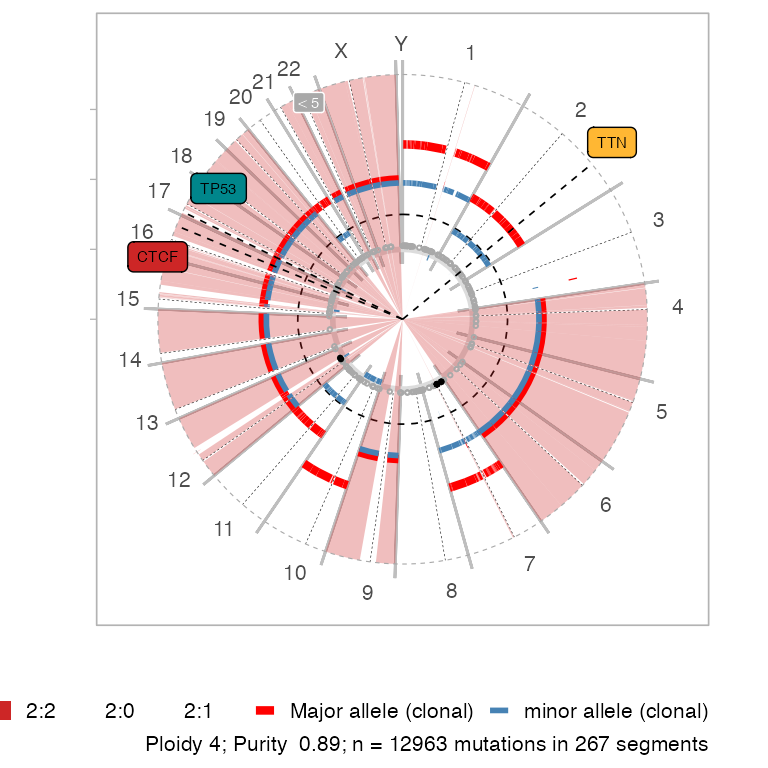
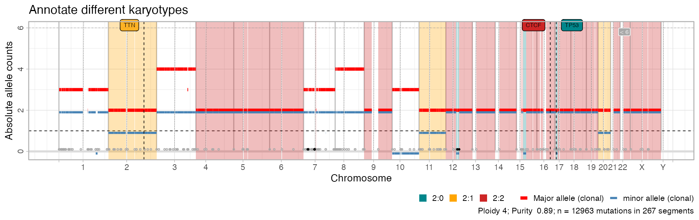
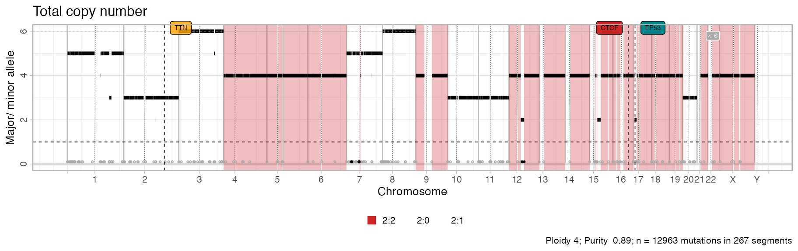
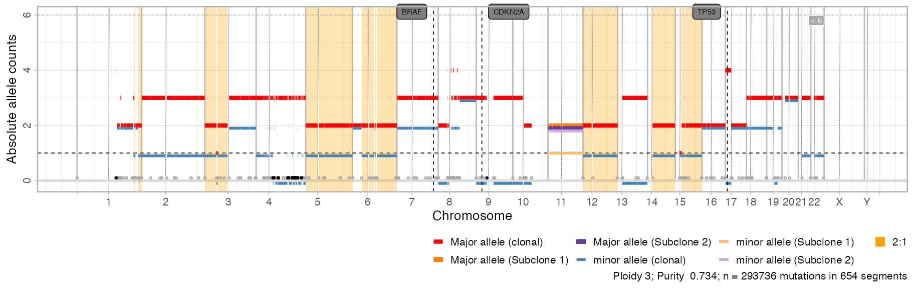
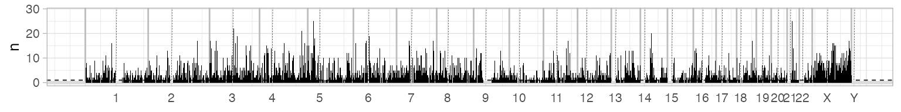

library(CNAqc)
#> ✓ Loading CNAqc, 'Copy Number Alteration quality check'. Support : <https://caravagn.github.io/CNAqc/>
require(dplyr)We work with the template dataset.
#> [ CNAqc - CNA Quality Check ]
#>
#> 2:2 [n = 7478] ■■■■■■■■■■■■■■■■■■■■■■■■■■■ { chr19:15292495:15292496:G:A }
#> 4:2 [n = 1893] ■■■■■■■
#> 3:2 [n = 1625] ■■■■■■
#> 2:1 [n = 1563] ■■■■■■ { chr2:179431633:179431634:C:T }
#> 3:0 [n = 312] ■Plotting copy number segments
All plotting functions use ggplot and multi-panel figures assembled with either ggpubr and cowplot.
Function plot_segments plots all the genome, annotating in the caption summmary statistics. By default, it plots the major and minor alleles for each segment as red and blue bars. In the bottom, each circle annotates a breakpoint in the segments; grays are breakpoints of samples that are shown in the plot. Since by default this plot has limited y-axis, breakpoints of segments outside the plot (e.g. very high amplifications) are in black.
Since x has drivers annotated, these are also plot with a colour that reflects their karyotype. Areas in the genome that are mapped to the most prevalent karyotype (here, "2:2"), are shadowed by default.
# Default plot
plot_segments(x)
#> Scale for 'fill' is already present. Adding another scale for 'fill', which
#> will replace the existing scale.
An alternative circular layout plot is available (default parameters).

Custom segments plot
# Shadow other karyotypes
plot_segments(x, highlight = c("2:1", "2:0", "2:2")) + labs(title = "Annotate different karyotypes")
#> Scale for 'fill' is already present. Adding another scale for 'fill', which
#> will replace the existing scale.
# Subset the genome
plot_segments(x, chromosomes = 'chr17') + labs(title = "Chromosome 17 zoom")
#> Scale for 'fill' is already present. Adding another scale for 'fill', which
#> will replace the existing scale.
plot_segments(x, chromosomes = c('chr17', 'chr13')) + labs(title = "Chromosome 17 and 13 zoom")
#> Scale for 'fill' is already present. Adding another scale for 'fill', which
#> will replace the existing scale.
# Total copy number
plot_segments(x, cn = 'total') + labs(title = "Total copy number")
#> Scale for 'fill' is already present. Adding another scale for 'fill', which
#> will replace the existing scale.
Comparing multiple calls
If you want to compare multiple CNA calls that have the same breakpoints using plot_multisample_CNA.
Here we show it replicating twice x, and making up some changes in x’s calls (rendering some segment diploid).
y = CNAqc::init(
example_dataset_CNAqc$snvs,
example_dataset_CNAqc$cna %>%
mutate(
Major = ifelse(chr %in% c("chr3", "chr4", "chr1"), 1, Major),
minor = ifelse(chr %in% c("chr3", "chr4", "chr1"), 1, minor)
),
example_dataset_CNAqc$purity,
ref = 'hg19')
#> [ CNAqc - CNA Quality Check ]
#> ℹ Using reference genome coordinates for: hg19.
#> ℹ Drivers are annotated, but 'gene' column is missing, using mutation location.
#> ! Missing CCF column from CNA calls, adding CCF = 1 assuming clonal CNA calls.
#> ℹ Input n = 13141 mutations for 267 CNA segments (267 clonal, 0 subclonal)
#> ✓ Mapped n = 12963 mutations to clonal segments (99% of input)
# Comparative CNA plot
plot_multisample_CNA(list(`Original` = x, `Copy` = x, `Faked_diploid` = y))
Plotting segments summaries
A summary plot of CNA calls is available via function plot_karyotypes. This function implements two visualizations:
-
type = 'percentage', reporting the proportion of genome covered by each karyotypes (default); -
type = 'number', reporting the counts of segments per karyotype.
The package uses a pre-set color schema to colour diploid segments in green, LOH segments with blues and amplifications in reds.
ggpubr::ggarrange(
plot_karyotypes(x),
plot_karyotypes(x, type = 'number'),
common.legend = TRUE,
legend = 'bottom'
)
You can also plot the segments’ length distribution, which is used to detect fragmentation patterns in the segments.

Plotting mutations
You have a function to plot all your data histograms
ggpubr::ggarrange(
plot_data_histogram(x, which = 'VAF'),
plot_data_histogram(x, which = 'DP'),
plot_data_histogram(x, which = 'NV'),
ncol = 3,
nrow = 1
)
#> Warning: Removed 8 rows containing missing values (geom_bar).If you compute Cancer Cell Fractions (CCF) values, you can use plot_data_histogram(x, which = 'CCF') as well.
Segment-specific VAF distribution
You can inspect the raw VAF distribution per segment, split by chromosome. Each colour represents a distinct segment; we want can use this plot to check that, for every karyotype and chromosome, the VAF distributions are similar.
# Default parameters to filter segments are annotatetd in the plot
inspect_segment(x)
#> Warning: Removed 30 rows containing missing values (geom_bar).
You can facet your data histograms and obtain a similar layout
plot_data_histogram(x, which = 'VAF') + facet_grid(karyotype~chr, scales = 'free')
#> Warning: Removed 88 rows containing missing values (geom_bar).
Visualising genome-wide mutations data
Genome-wide plots that follow the layout of plot_segments are avaiable to view the genome-wide distributions of the number of mutations, their VAF and depth. VAF and depth-plotting functions (scatterplots) can subset the input data to speed up rendering and reduce the size of output files - by default N = 5000 points are randomly sampled. Counts plot, instead, bin the genome locations by one megabase (\(10^6\) bases).

An example effect of downsampling the data is the following
# Different subsamples
ggpubr::ggarrange(
plot_gw_depth(x, N = 1000),
plot_gw_depth(x),
plot_gw_depth(x, N = 10000),
ncol = 1
)
Plotting all data
A one-summary plot can be easily assembled combining the above functions and functions from cowplot or other ggplot-manipulation packages.
# Layout a panel with segments in bottom, and all other genome-wide plots on top.
# Via cowplot we can align plots on the vertical axis, and stretch their relative
# height to obtain a nicer layout.
cowplot::plot_grid(
plot_gw_counts(x),
plot_gw_vaf(x, N = 10000),
plot_gw_depth(x, N = 10000),
plot_segments(x),
align = 'v',
nrow = 4,
rel_heights = c(.15, .15, .15, .8))
#> Scale for 'fill' is already present. Adding another scale for 'fill', which
#> will replace the existing scale.
This is actually done by the default S3 plot function, which includes both segments and data histograms